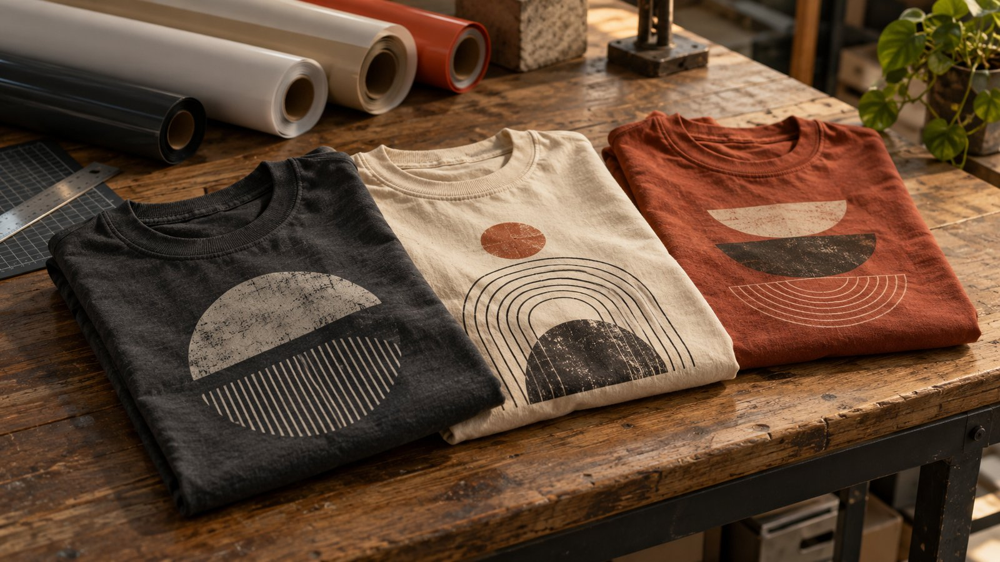
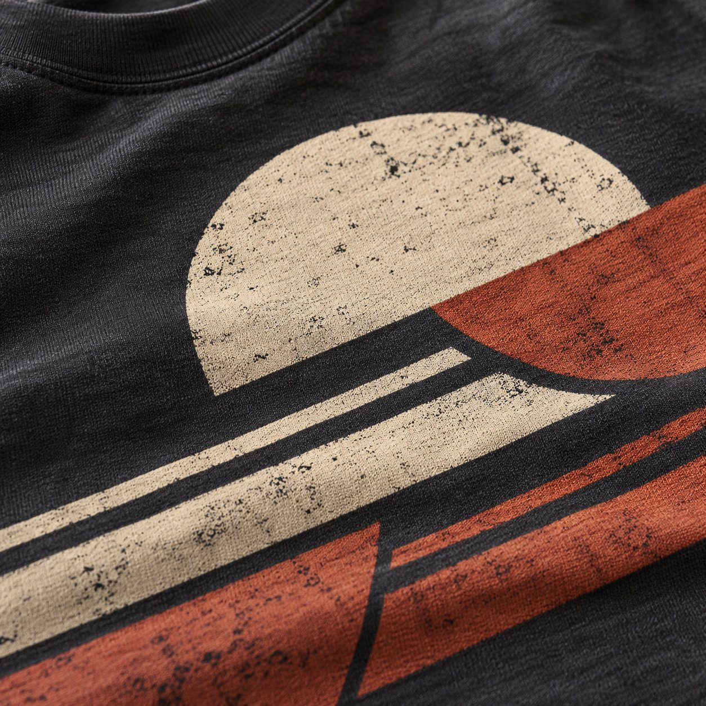

PRISMÁTICA / HECHO PARA SER VOS
Remeras con tu identidad. Insumos para crear.
Tu idea puede ser una estampa. Tu forma de vestir, una declaración.

Elegí tu punto de partida.
Productos, diseños, precios, presentaciones y disponibilidad de muestra.
Cargando la selección…
SUR98
Vestirse no es una moda.
Es una identidad.
Urbano, vintage y con una mirada propia. Descubrí la nueva línea de PRISMÁTICA.
Descubrí SUR98 Imágenes y diseños ilustrativos de la demo.
Ideas que toman forma.
Una muestra visual para imaginar posibilidades. Imágenes ilustrativas, a reemplazar por trabajos reales.
Lo próximo que crees empieza con una idea.
Consultanos por personalización, insumos o la línea SUR98.
+54 9 11 6216-5924 ↗@creaciones_prismatica ↗- Dirección
- A confirmar. Consultanos antes de acercarte.
- Horario de atención
- A confirmar por WhatsApp.
¿Cómo consulto por una remera personalizada?
Elegí una propuesta de la tienda y escribinos por WhatsApp para coordinar tu idea, la cantidad y los talles. El diseño y el presupuesto final se confirman antes de encargar.
¿Qué insumo necesito para mi proyecto?
Contanos qué querés personalizar y con qué técnica trabajás. Consultá composición, presentación, medidas y compatibilidad antes de elegir el insumo.
¿Qué es SUR98?
Es la nueva línea de PRISMÁTICA, donde vestirse no es una moda sino una identidad. Los diseños que ves en la demo son ilustrativos.
¿Dónde y en qué horario atienden?
Dirección y horarios a confirmar. Escribinos por WhatsApp antes de coordinar una visita o retiro.